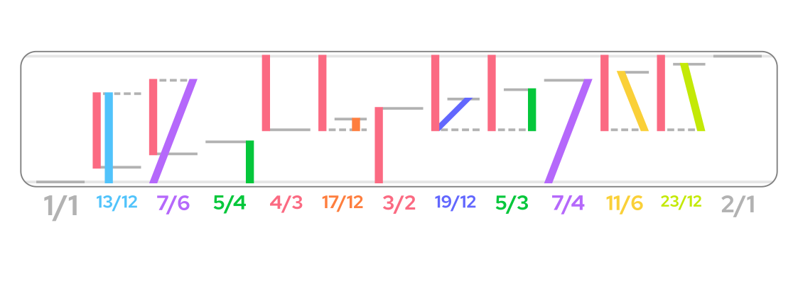
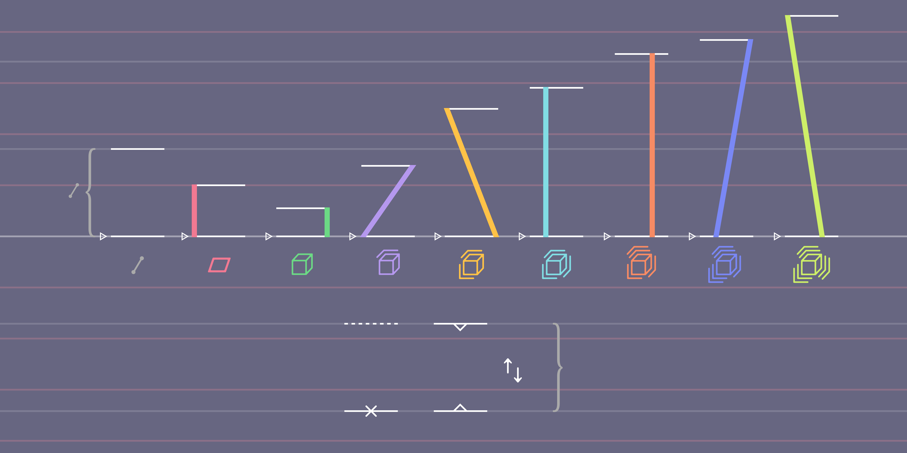

First of all, for context, this article is about the chord notation system used in the music video for Caftaphata by Lamplight. This track is awesome and the video has some nice graphics, and I recommend anyone into electronic music to give it a listen.
After watching the short explanation videos posted by Lamplight at about the same time as the music video, I had a decent understanding of how the system worked. But I noticed a couple of things that could be done differently. First of all, harmonic 13 was notated with brackets, whereas lower prime harmonics apart from 2 used lines that span the length of the interval (which is the harmonic reduced by some number of octaves).
Another thing I was wondering about was why Lamplight had decided to use the interval 11/4 instead of fully octave-reducing it to 11/8 like the lower harmonics. Harmonic 13 is the same way with 13/4. I later learned from one of their more recent videos that this is to avoid clashing between the notes in the chords.
Before that, though, I had made a diagram of an extended version of the chord notation going all the way to prime harmonic 23, shown below. All of the prime harmonics except for 2 had lines with their own unique colors (I also replaced the color for 13), and all of them were fully octave-reduced. I sent this in an email to Lamplight, wanting to know their thoughts on what I made.

After that more recent video came out, though, I found a file on Lamplight’s website containing chord diagram components (found here), so I downloaded and messed around with it. I ended up with a similar but more polished diagram, and this time, the original colors matched pretty much exactly, and all prime harmonics starting with 5 were lowered by only 2 octaves from their fully un-reduced form, regardless of whether that’s enough to fully octave-reduce them (per Lamplight’s recommendation in a reply to a comment I left on that video). I also slightly changed the colors I came up with for the other prime harmonics.
And just yesterday, I got an email back from Lamplight. They apparently liked the first diagram, since they said they think that it functions well and that it’s a really good idea.
Below is the newer extended diagram.
